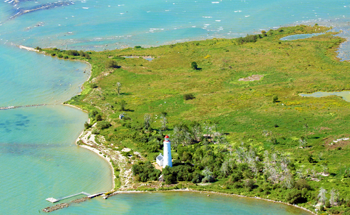

Chantry Island is located on Lake Huron, just over a mile southwest of the Saugeen River mouth in Southampton, Ontario. On the island is a majestic Imperial Lighthouse built in the mid 1800’s, as well as the Keeper’s quarters and a boat house. In 1822, during a hydrographic survey, Captain Henry Bayfield of the Royal Navy christened the island and named it after his friend and British sculptor Sir Francis Chantry.
Book a Tour View ScheduleThe island varies in size depending on the level of Lake Huron. Today, with a low lake level Chantry Island is about 68 acres. In 1986 when the water level was at the highest of the century, the island was only about 10 acres, causing trees on the west, north and south sides to drown.
Chantry Island is a glacial moraine and consists of stone above the water and beneath extending a mile north and a mile south of the island. These underwater shoals of massive granite boulders have made this area one of the most treacherous in the Great Lakes. There are over 50 known shipwrecks around the island and there are many accounts from the 1800’s and early – mid 1900’s of these disasters and lost lives. Today, buoys and modern navigational tools safely guide boats through the area.
During the mid 1800’s water traffic on the Great Lakes had substantially increased and the colonial government called for improved navigational tools for the mariners on the Lake Huron. John Brown of Thorold was contracted to build the lighthouse on Chantry Island, as well as 10 other lighthouses to help sailors navigate the Lake. Because of the expense and difficulty of building, only six were completed. The Chantry Island Lighthouse was one of these completed and it was lit on April 1, 1859.
The lighthouse stands 86 ft. above water level and is 80 ft. high from its base to the light’s center. The lantern room of the lighthouse was fitted with a Fresnel lens built and transported from Paris, France. The first fuel used was sperm whale oil and the first light was a fixed light, not the familiar flashing one. Other fuels used have been colza oil, coal oil, kerosene, acetylene and electricity. Its present-day flashing light is solar powered!
During the mid 1800’s water traffic on the Great Lakes had substantially increased and the colonial government called for improved navigational tools for the mariners on the Lake Huron. John Brown of Thorold was contracted to build the lighthouse on Chantry Island, as well as 10 other lighthouses to help sailors navigate the Lake. Because of the expense and difficulty of building, only six were completed. The Chantry Island Lighthouse was one of these completed and it was lit on April 1, 1859.